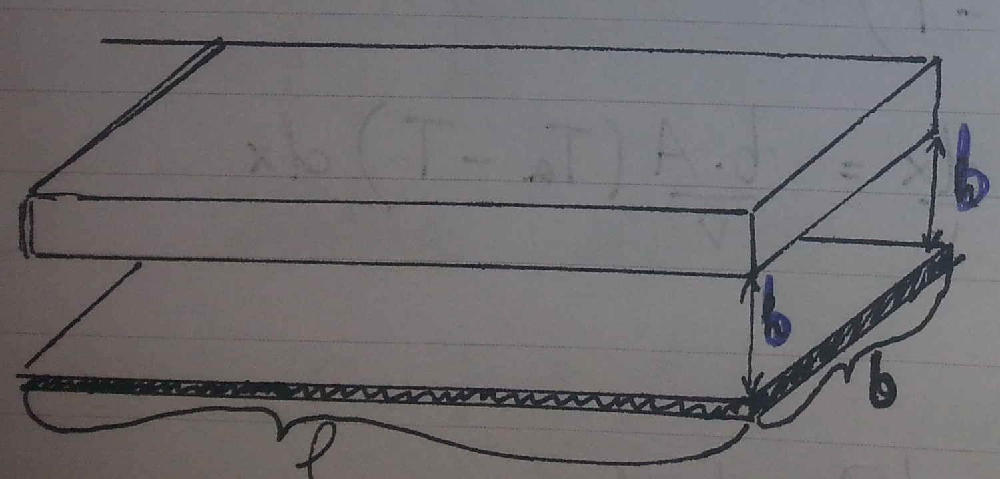
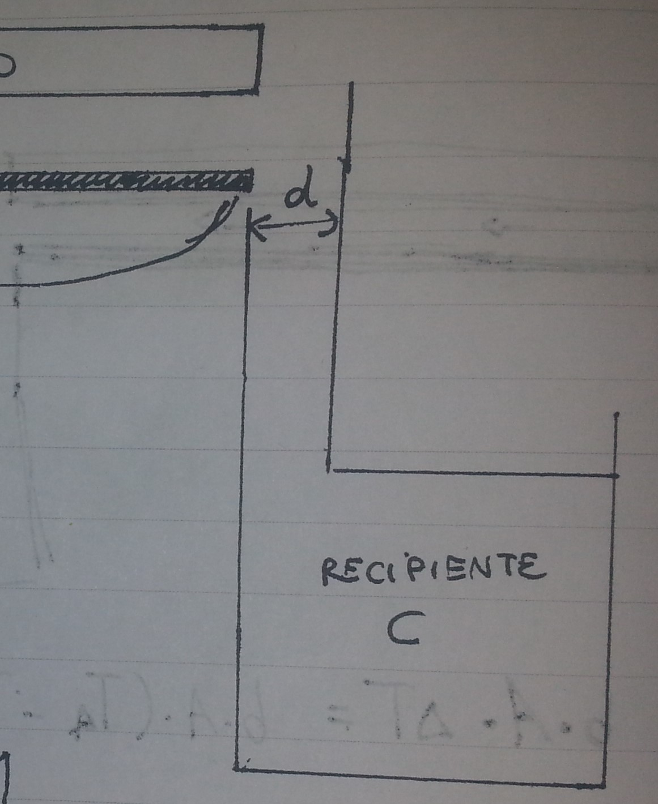
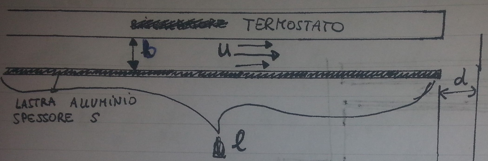

arna199816 mar 2016, 0:16
Ti chiedo un paio di cose per essere sicuro di aver capito: l'acqua smette di fluire in C perché la lastra si é dilatata talmente tanto da aver chiuso la fessura \(d\)? In tal caso, la lastra è fissata in modo da potersi dilatare solo nello stesso verso in cui scorre l'acqua?wotzu14 mar 2016, 23:38
Rieccoci con la staffetta, questo è un problema che mi sono inventato, spero sia giusto ma questo si saprà solo dopo una vostra conferma.Viene fatta passare dell'acqua a velocità \(u=3,00m/s\) attraverso una lastra di alluminio (di spessore \(s=7mm)\) e un termostato, l'acqua prima di entrare nell'intercapedine ha una temperatura \(T_a=363K\) e la lastra di alluminio una temperatura iniziale \(T_0=220K\).
Supponiamo per semplicità che la potenza trasmessa dall'acqua alla lastra sia \(P=wA\Delta T\),dove \(w=3.22\cdot 10^3 W/m^2K\) è una costante e \(A\) è la superficie di contatto.
Il termostato ha la funzione di mantenere la temperatura dell'acqua al valore costante \(T_a\) nonostante essa ceda calore alla lastra.
Sapendo che l'acqua una volta superata l'intercapedine viene convogliata in un recipiente \(C\),trovare la massima quantità d'acqua raccolta in \(C\).
(tenere presente che la temperatura della lastra cresce in modo omogeneo e che \(l>>b\))
le figure dovrebbero chiarirvi la situazione. (guardate prima l'ultima che è la più completa, le altre sono particolari:la prima è la lastra e il termostato visti in prospettiva la seconda è il continuo dell'ultima)
Ecco i dati: \(b=0.1m,l=2m,d=5mm,c_L=900J/kg\cdot K,\lambda_L=23\cdot 10^{-6}k^{-1}, \rho_L=2700Kg/m^3\)
dove \(\lambda_L=\)coefficiente di dilatazioe lineare lastra di alluminio.(a destra la lastra è collegata a un muro quindi si espande verso sinistra)
- Allegati
-

- l'immagine pesava troppo per essere caricata tutta insieme per cui ho dovuto spezzarla, questa è la lastra e il termostato visto in prospettiva
- 20160314_143636.jpg (176.62 KiB) Visto 9256 volte
-

- recipiente C alla fine della lastra
- 4567.jpg (215.86 KiB) Visto 9256 volte
-

- lastra e termostato visti frontalmente
- 1234.jpg (233.57 KiB) Visto 9256 volte
 Riscaldatore 3.pdf
Riscaldatore 3.pdf